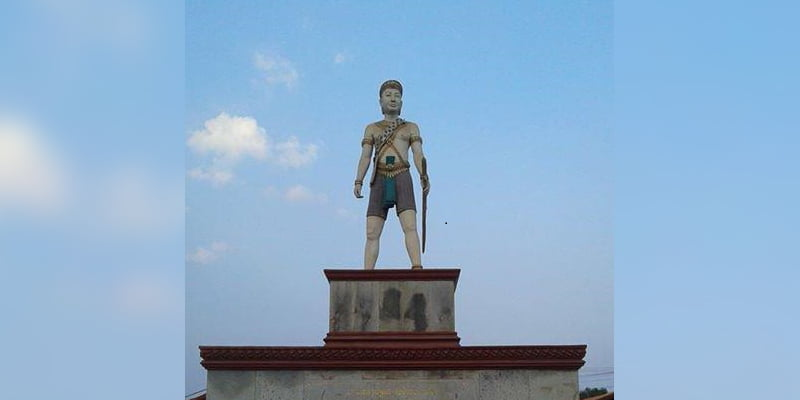

 ខេត្តត្បូងឃ្មុំ មានឈ្មោះល្បីល្បាញ តាំងពីសម័យលង្វែកមកម្ល៉េះ ដោយសារតំបន់នេះទាក់ទងដល់រឿងទុំទាវ។ ពីមុនត្បូងឃ្មុំជាខេត្ត ឬភូមិភាគ ដែលបុរាណហៅថា “ដី”(ក្សេត្រ) គ្រប់គ្រងដោយស្តេចត្រាញ់មានខេត្តចំណុះជាច្រើន។ ឯប្រវត្តិឈ្មោះខេត្តនេះមានការចងចាំតៗ គ្នា ពីមនុស្សមួយជំនាន់ទៅមួយជំនាន់។ ក្នុងដំណាលនោះបានពោលតៗគ្នាថា មូលហេតុដែលស្រុកនេះមានឈ្មោះត្បូងឃ្មុំ ក៏ដោយសារពីដើមមានដើមស្ពុងធំមួយដុះជាប់នឹងផ្លូវ ហើយនៅមែកស្ពុងនោះមានឃ្មុំធំ១សំបុក។ ឃ្មុំនោះកាចខ្លាំងណាស់ ឲ្យតែមានអ្នកដំណើរណាដើរតាមផ្លូវ ហើយវាធុំក្លិនមនុស្ស ក៏ហើរមកទិចរត់មិនសព្វដី។ ឯអ្នកដែលត្រូវឃ្មុំទិចនោះចិត្តល្អ ក៏ប្រាប់អ្នកស្រុកឯទៀតថា បើចង់ឆ្លងកាត់ត្រង់ចំណុចដើមស្ពុងនោះ ត្រូវដើរពីខាងត្បូងឃ្មុំ (ខាងក្រោមខ្យល់) ដើម្បីកុំឲ្យឃ្មុំវាធំក្លិន បើពុំនោះទេ ច្បាស់ជាវាហើរ មកទិចមិនខាន។ តាំងពីពេលនោះមកមនុស្សក៏ប្រាប់តៗគ្នា ជាប់ឈ្មោះថា “ត្បូងឃ្មុំ” រហូតទល់សព្វថ្ងៃ។ បើយោងតាមឯកសារខ្លះក៏ចារទុកយ៉ាងនេះដែរ សូម្បីតែកាលពីសម័យស្រីសន្ធរក្នុងពេលយាយផាន់ កុហកនាងទាវជាកូនស្រីឲ្យមករៀបការជាមួយម៉ឺនងួន ក៏ឧកញ៉ាអជ៌ុនបានចាត់បរិវារឲ្យបររទេះគោ រទេះក្របីដឹកភ័ស្តុភារដង្ហែតាមផ្លូវពីខាងត្បូងឃ្មុំដែរ ហើយអ្នកចូលរួមក្នុងពិធីរៀបការនោះ ត្រូវទទួលទោសប្រហារជីវិត និងដាក់បញ្ចូលជា “អ្នកងារ” ដែលអ្នកសិក្សាអក្សរសិល្ប៍ខ្មែរ រឿងទុំទាវ សុទ្ធតែបានដឹងគ្រប់គ្នា។ ដោយឡែកយោងតាមឯកសារខ្លះបានសរសេរថាដើមឡើយនៅទីអារាមចាស់ ដែលមានទីតាំងនៅលើទួលមួយនោះ គ្មានព្រះសង្ឃគង់នៅទេគឺមានតែយាយជីក្រមុំម្នាក់ឈ្មោះ កែ រស់នៅតែម្នាក់ឯងនៅក្បែរវត្តមានដើមបេងដ៏ធំមានឃ្មុំ១សំបុកទំនៅលើមែក ហើយឃ្មុំនេះកាចណាស់ គ្មានអ្នកណាហ៊ានទៅជិតទេ។ ដូនជីនោះតែងតែប្រាប់អ្នកដំណើរឲ្យដើរពីខាងត្បូងឃ្មុំ ដើម្បីកុំឲ្យឃ្មុំធុំក្លិន វាមកទិចមិនខាន។ ពាក្យថា “ដើរខាងត្បូងឃ្មុំ” ក៏ហៅយារៗក្លាយទៅជា “ត្បូងឃ្មុំ” វិញពុំមែនគុជឃ្មុំ ម្យ៉ាងដែលគេប្រើធ្វើត្បូងចិញ្ចៀននោះទេ។ ចំណេរតមក ដើមបេងនោះ ត្រូវដើមជ្រៃ ដុះរឹតរួតខ្លាំង ក៏ងាប់ទៅ ប៉ុន្តែ ទីនោះ អ្នកស្រុកមានជំនឿថា មានអ្នកតាគង់សណ្ឋិតដែលអ្នកមានបណ្តាស័ក្តិដើរកាត់មិនបានឡើយច្បាស់ជាធ្លាក់បុណ្យស័ក្តិ។ ដោយឡែកខេត្តត្បូងឃ្មុំ ពីបុរាណគ្រប់គ្រងដោយស្តេចត្រាញ់ ស័ក្តិ១០ហ៊ូពាន់ មានគោរម្យ៍ងារជា “អ្នកឧកញ៉ាអជ៌ូន”។ ស្តេចត្រាញ់ មានអំណាច អាចកាប់សំលាប់ជនណាក៏បាន ប៉ុន្តែ ក្រោយមក ព្រះមហាក្សត្របានដកសិទ្ធិអំណាចបន្តិចម្តងៗ។ សព្វថ្ងៃ ក្រុងសួង ក៏ដូចផ្សារសួង ជាអតីតដែនដីស្រុកត្បូងឃ្មុំ ដែលមានដើមពោធិ៍២ដើម កាលគេចាប់ទុំ ទៅសំលាប់ និងអតីតផ្ទះយាយផាន់ ជាតឹកតាងស្រាប់៕ [១]១.សាវតាខេត្តត្បូងឃ្មុំ តាមពិតទៅ ខេត្តត្បូងឃ្មុំ ពុំមែនជាឈ្មោះខេត្តថ្មីនោះទេ ឈ្មោះស្រុក ឬខេត្តត្បូងឃ្មុំ បានលេចឡើងដំបូងក្នុងសិលាចារឹកសម័យក្រោយអង្គរ (IMA.37) ចារនៅលើ ជញ្ជាំងនៃស្លាបខាងជើង រោងទងខាងកើត នៃប្រាសាទអង្គរវត្តរួចទៅហើយ។ សិលាចារឹកនេះ ចារដោយបុរសម្នាក់ឈ្មោះជយនន្ទនៅឆ្នាំ១៧០១។ ក្នុងសិលាចារឹកដដែលនេះ គឺចាររៀបរាប់ពីព្រឹត្តការណ៍ដែលព្រះរាជាបានដំឡើង បុណ្យសក្តិឱ្យគាត់មានងារជាស្តេចក្រាញ់ “អរជូន” ត្រួតត្រាដែនដីខេត្តត្បូងឃ្មុំ។ រហូតដល់ដើមសតវត្សទី១៩ ឃើញមានឯកសារមួយចំនួនដូចជា ព្រះរាជពង្សាវតារស្នាដៃអក្សរសិល្ប៍រឿងទុំទាវ រឿងហ្លួងព្រះស្តេចកនដែល ជារឿងព្រេងនិទានបែបប្រវត្តិសាស្ត្រ ព្រមទាំងឯកសារប្រវត្តិសាស្ត្រជាច្រើនទៀត ទាំងភាសាខ្មែរ និងបរទេស ហើយភាគច្រើនឯកសារជាភាសាបារាំងសុទ្ធតែ បានសរសេររៀបរាប់អំពីឈ្មោះស្រុក ឬខេត្តត្បូងឃ្មុំ។ នៅពេលប្រទេសខ្មែរស្ថិតក្រោមរបបអាណាព្យាបាលរបស់បារាំងចន្លោះឆ្នាំ១៨៦៣ ដល់១៩៥៣ ឃើញមានឯកសារដែលសរសេរពីការបង្កើតខេត្តស្រុក ខណ្ឌ ឃុំ និងភូមិ។ ជាក់ស្តែងខេត្តកំពង់ចាមបង្កើតនៅថ្ងៃទី១ ខែមករា ឆ្នាំ១៨៨៥ ហើយមន្ត្រីបារាំង ម្នាក់ឈ្មោះ ហ្វ្រង់ស័រ បូឌាន់ (Francois Baudoin) ជាអ្នកត្រួតត្រាពី លើចៅហ្វាយខេត្ត ខ្មែរ។ ខេត្តកំពង់ចាមកាលណោះ មានស្រុកចំនួនដប់ជាចំណុះ គឺស្រុកកំពង់សៀម ក្រូចឆ្មារ ព្រៃឈរ ជើងព្រៃ កងមាស កោះសូទិន ស្រីសន្ធរ មេមត់ ស្ទឹងត្រង់ និងស្រុកត្បូងឃ្មុំ។ កំណែទម្រង់លើវិស័យរដ្ឋបាលនៅក្នុងរបបអាណាព្យាបាលបារាំង បានធ្វើឡើងជាបន្តបន្ទាប់ពិសេសក្នុងរាជ្យព្រះបាទអង្គឌួង និងព្រះបាទនរោត្តម។ នៅក្នុងឆ្នាំ១៨៩៧ ត្បូងឃ្មុំត្រូវគេដំឡើងពីស្រុកឱ្យទៅជាខេត្ត ដែលកាលណោះ មានខេត្តចំនួន ៥៧ ប៉ុន្តែពុំមានខេត្តកំពង់ចាមទេ។ លុះដល់ឆ្នាំ១៩១៧ មានការរុះរើចំនួនខេត្តម្តងទៀត ដោយបន្ថយពី ៥៧ខេត្តមកនៅត្រឹម ៥១ខេត្តវិញ ហើយត្បូងឃ្មុំនៅជាខេត្តដដែល។ រហូតដល់ទសវត្ស១៩២០ ក៏មានកំណែទម្រង់រចនា សម្ព័ន្ធវិស័យរដ្ឋបាលជាថ្មីទៀត ហើយនៅពេលនោះរក្សាទុកខេត្តតែ ១៣ ប៉ុណ្ណោះ ដោយត្បូងឃ្មុំធ្លាប់ជាខេត្តកាលពីមុនមកនោះ ត្រូវប្រែក្លាយឱ្យទៅជាស្រុកមួយរបស់ ខេត្តកំពង់ចាមវិញ។ ចាប់ពីពេលនោះមក យើងពុំឃើញមានការផ្លាស់ប្តូរទៀតឡើយ រហូតមកទល់នឹងឆ្នាំ២០១៤ ទើបរាជរដ្ឋាភិបាលកម្ពុជា សម្រេចប្រែក្លាយទឹកដីត្បូងឃ្មុំ ឱ្យទៅជាខេត្តវិញ ដូចពីអតីតកាលជាង ១០០ឆ្នាំមុន។ ការសិក្សាស្រាវជ្រាវរបបគំហើញ និងឯកសារពាក់ព័ន្ធជាច្រើនទៀត បានបញ្ជាក់យ៉ាង ច្បាស់ថាកំណើតទឹកដីត្បូងឃ្មុំ បានកកើតឡើងតាំងពីសម័យបុរេប្រវត្តិសាស្ត្រប្រហែល ១០០០ឆ្នាំមុនគ្រិស្តសករាជមកម្ល៉េះ ដែលមានមនុស្សមកតាំងទីលំនៅជាក្រុម ឬជាសហគមន៍។ ជាក់ស្ដែងតាមរយៈកំណាយនៅស្ថានីយ៍បន្ទាយគូ នៅក្នុងស្រុក ពញាក្រែក និងស្រុកមេមត់កន្លងមក បានរកឃើញដូចជា៖ កុលាបភាជន៍ ឧបករណ៍ថ្ម ខ្នារថ្ពិចអំបោះ គ្រាប់លុញ កងដៃថ្ម អង្កាំថ្ម ជាដើម។ ចំណែកកំណាយនៅទីបញ្ចុះសពស្ថិត នៅឃុំវាលម្លូ ស្រុកពញាក្រែកឯណេះវិញ បានរកឃើញក្អម ឆ្នាំង ឧបករណ៍ថ្ម គ្រឿងអលង្ការ ធ្វើពីសំរឹទ្ធ និងដែក អង្កាំកែវ ក្រវិលកែវ កាំបិតស្នៀត លំពែង ។ល។ រីឯនៅតាមទួល ស្ថានីយដែលអ្នកស្រុកហៅ “ភ្នំអំបែង”ឬ “ទួលអំបែងចេះ” ស្ថិតនៅឃុំប្រធាតុ ស្រុកអូរាំងឪ និងឃុំថ្មពេជ្រស្រុកត្បូងឃ្មុំ ក៏បានរកឃើញសំណល់ ជាវត្ថុប្រើប្រាស់ប្រចាំថ្ងៃ ដូចជា៖ អំបែង ក្អម ឆ្នាំង និងឧបករណ៍ថ្មជាដើម។ ទន្ទឹមនឹងនេះ សំណង់ប្រាសាទនិងសំណង់ស្ថាបត្យកម្មដែលបានសាងសង់ ក្នុងសម័យមុនអង្គរដែលនៅសេសសល់សព្វថ្ងៃនេះរួមមាន៖ ប្រាសាទ ព្រះធាតុព្រះស្រី (ព្រះធាតុបាស្រី) សង់នៅសតវត្សទី ៦ ប្រាសាទខ្នាយវាន សង់នៅសតវត្សទី ៦-៧ ប្រាសាទព្រះធាតុ សង់នៅឆ្នាំ ៦៥៥ ប្រាសាទដំរិលប្រាសាទព្រះធាតុស្រម ទួលយាយទេព និងផ្ដែរនៅវត្តដូនរតន៍។ ដោយឡែកដើមសម័យអង្គរនៅចន្លោះចុងសតវត្សទី ៨ និងដើមសតវត្សទី ៩ ព្រះបាទជ័យវរ្ម័នទី២ បានបង្កើតទីក្រុងមួយស្ថិតក្នុងភូមិសាស្ត្រ ទឹកដីត្បូងឃ្មុំសព្វថ្ងៃនៅក្នុងឃុំដូនតី ស្រុកពញាក្រែក ដែលមានឈ្មោះថា “ឥន្ទ្របុរ” ជារាជធានីដំបូងរបស់ព្រះអង្គមុនពេលដែលទ្រង់យាងទៅគង់នៅតំបន់អង្គរ ខេត្តសៀមរាប។ ក្នុងសម័យក្រោយអង្គរ ព្រឹត្តិការណ៍ជាប្រវត្តិសាស្ត្រធំៗ ពីរបានកើតឡើង។ ទីមួយ ក្នុងរជ្ជកាលហ្លួងព្រះស្ដេចកន បានសាងសង់រាជធានីបន្ទាយព្រៃនគរក្នុងឆ្នាំ ១៥១៤ សព្វថ្ងៃហៅថា “ព្រៃនគរក្នុង”ស្ថិតក្នុងភូមិចន្លក់ដូនតី ខេត្តត្បូងឃ្មុំ ដោយដាក់ឈ្មោះថា “ក្រុងស្រឡប់ពិជ័យបន្ទាយព្រៃនគរ” ឬ “ក្រុងស្រឡប់ដូនតីព្រៃនគរបវររាជធានី”។ ទីពីរ រឿងទុំទាវដែលបានរំលេចរឿងរ៉ាវជាច្រើនទាក់ទងទឹកដីខេត្តត្បូងឃ្មុំក្នុងអំឡុងចុងសតវត្សទី១៦ ដោយមានស្ដេចក្រាញ់ឧកញ៉ាអរជូន ជាអ្នកគ្រប់គ្រងទឹកដីត្បូងឃ្មុំ។ រឿងទុំទាវបានដក់ជាប់ក្នុងអារម្មណ៍របស់មនុស្សគ្រប់មជ្ឈដ្ឋានមកទល់សព្វថ្ងៃនេះ។ គួរបញ្ជាក់ថាមុនការត្រួតត្រារបស់បារាំង ដែនដីខ្មែរទាំងមូលបានបែងចែកជាតំបន់ ដែលខ្មែរបុរាណហៅថា “ដី” ហើយ “ដី” នីមួយៗ មានពី ៦ ទៅ ១០ ខេត្ត គ្រប់គ្រងផ្ទាល់ដោយព្រះរាជាឧបរាជ្យ និងព្រះរាជមាតា។ លុះក្រោយមកស្ថិតក្រោម អំណាចត្រួតត្រារបស់រាជវង្ស “ដី” នីមួយៗ ត្រូវបានព្រះរាជាប្រគល់ឲ្យមន្ត្រីជាន់ខ្ពស់ ដែលកាលនោះ មានងារជាស្ដេចក្រាញ់ ជាអ្នកគ្រប់គ្រង។ ជាក់ស្ដែងនៅក្នុង រាជ្យរបស់ព្រះបាទស្រីធម្មរាជា (១៦២៩-១៦៣០) បានតែងតាំងស្ដេចក្រាញ់ប្រាំរូប ឲ្យត្រួតត្រាដែនដីចំនួន ៥ គឺដីត្បូងឃ្មុំគ្រប់គ្រងដោយឧកញ៉ាអរជូន ដីកំពង់ស្វាយគ្រប់គ្រងដោយឧកញ៉ាតេជោ ដីទ្រាំងត្រួតត្រាដោយឧកញ៉ាពិស្ណុលោក ដីពោធិ៍សាត់គ្រប់គ្រងដោយ ឧកញ៉ាសួគ៌ាលោក ដីបាភ្នំត្រួតត្រាដោយឧកញ៉ាធម្មាតេជោ។ អំណេះតមក ប្រព័ន្ធគ្រប់គ្រងរដ្ឋបាលដែនដី ត្រូវបានបែងកែសម្រួលជាបន្តបន្ទាប់ តួយ៉ាងដូចជាខេត្តត្បូងឃ្មុំ បានផ្លាស់ពីតំបន់ត្បូងឃ្មុំ ដីត្បូងឃ្មុំទៅជាស្រុកត្បូងឃ្មុំ ជាខេត្តត្បូងឃ្មុំ និងពីខេត្តត្បូងឃ្មុំទៅជាស្រុក ត្រឡប់ចុះត្រឡប់ឡើង និងចុងក្រោយ ទើបរាជរដ្ឋាភិបាលសម្រេចប្រែក្លាយជាខេត្តត្បូងឃ្មុំវិញ តាមព្រះរាជក្រឹត្យលេខ នស/រកត/១២១៣/១៤៤៥ ចុះថ្ងៃទី៣១ ខែធ្នូ ឆ្នាំ ២០១៣ ដោយបំបែកចេញពីខេត្តកំពង់ចាម ហើយប្រកាសដាក់ឲ្យដំណើរការជាផ្លូវការនៅថ្ងៃទី០២ ខែមិថុនា ឆ្នាំ២០១៤។